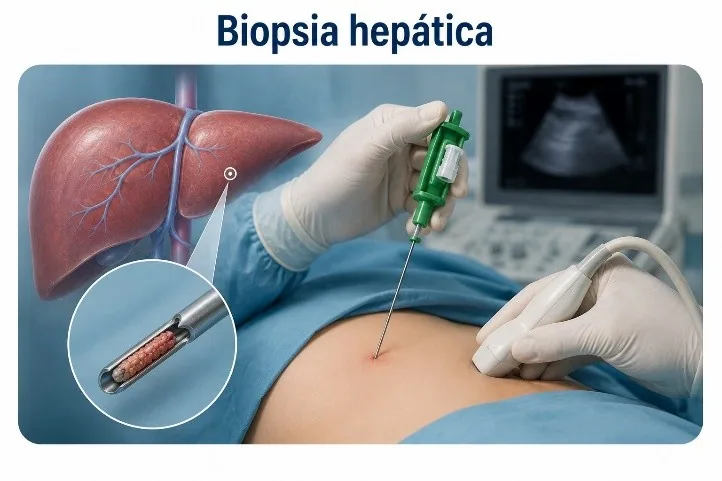

Biopsia hepática
¿Qué es?
La biopsia hepática es un procedimiento anatomopatológico que consiste en obtener una pequeña muestra de tejido del hígado para examinarla al microscopio. Generalmente se realiza mediante una aguja fina introducida a través de la piel (biopsia percutánea), aunque también puede efectuarse por vía transyugular o durante una cirugía. El análisis de la muestra permite identificar alteraciones en la estructura del hígado y establecer un diagnóstico preciso.
Función
Intervenciones de enfermería
Antes
Verificar la identidad del paciente y la orden médica, explicar el procedimiento para disminuir la ansiedad, confirmar la firma del consentimiento informado, comprobar que el paciente haya cumplido el ayuno indicado, revisar los resultados de las pruebas de coagulación y el recuento de plaquetas, identificar antecedentes de alergias y el uso de anticoagulantes o antiagregantes, preparar el material necesario y controlar los signos vitales.
Durante
Se coloca al paciente en la posición indicada, se mantiene la técnica aséptica, se brinda apoyo emocional, se vigilan los signos vitales y el estado general, se colabora con el médico durante la toma de la muestra y se observa la tolerancia del paciente durante todo el procedimiento.
Después
Se mantiene al paciente en reposo según el protocolo institucional, generalmente acostado sobre el lado derecho para favorecer la hemostasia, se controlan periódicamente los signos vitales, se vigila la presencia de dolor intenso, sangrado, hipotensión o dificultad respiratoria, se inspecciona el sitio de punción, se brindan indicaciones para evitar esfuerzos físicos durante las siguientes 24 a 48 horas y se registran los cuidados realizados y la evolución del paciente.